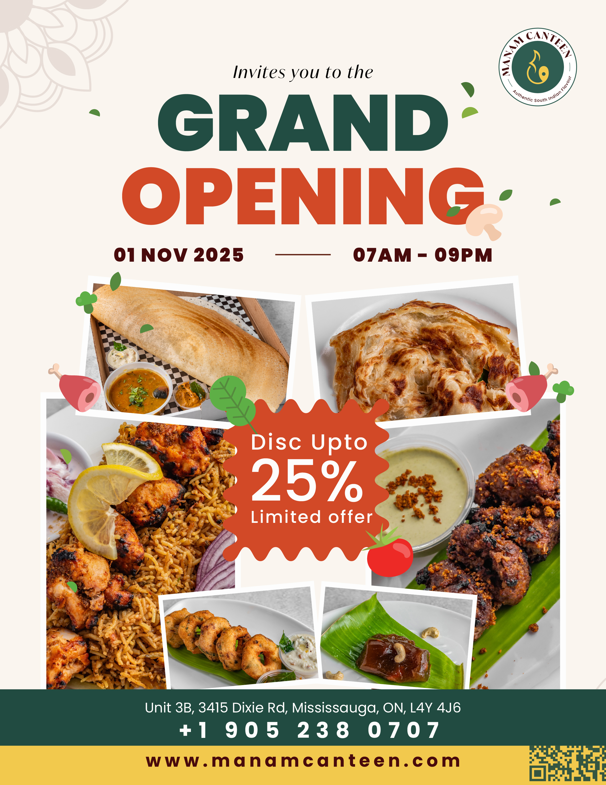
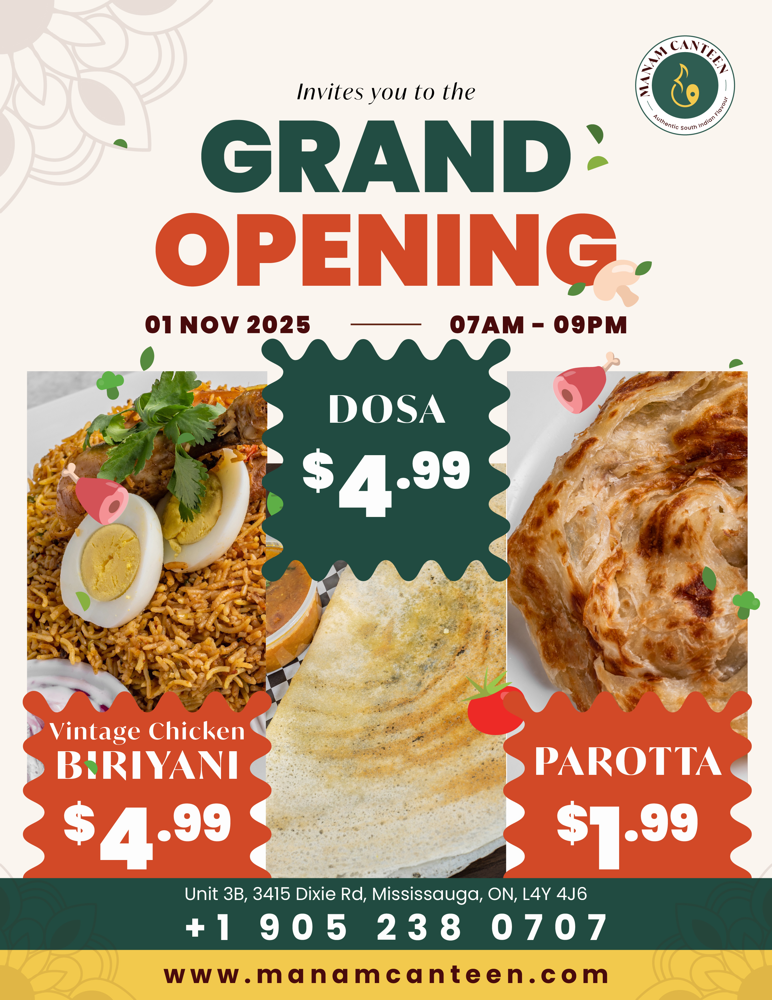

The Brief
Manam Canteen needed more than a logo — they needed a brand identity with the warmth and authenticity of home cooking, combined with the visual confidence to compete in Canada's crowded food service market.
The challenge was balancing cultural richness with modern appeal: creating something that felt deeply Indian yet immediately accessible to a diverse Canadian audience — without resorting to clichés.
No visual identity.
No brand story.
The restaurant was operating without any consistent visual language. Menus, social media, and signage were mismatched, making it impossible to build brand recognition or communicate the quality of the food and experience.
Build a brand
from the ground up.
Design a complete, scalable brand identity system that communicates warmth, authenticity, and quality. The system needed to work across print collateral, digital platforms, signage, packaging, and video — with room to grow as the business expanded.
Warmth. Craft. Authenticity.
The visual language draws from the warm earth tones of Indian spice markets, combined with clean modern typography and intentional white space — creating a brand that feels both traditional and contemporary.


How we got there.



Brand that delivers.
"Balaji understood exactly what we needed — not just a logo, but a brand that tells our story. From the colour choices to the social media templates, every element feels like it belongs to Manam. The quality and attention to detail were exceptional."